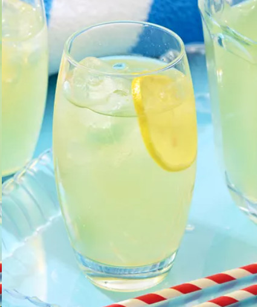

Limonade

Beschreibung
State Fair Limonade aus Zitronen. Etwas aufwendiger, weil sie 12 h ziehen muss
und danach noch über mehrere Stunden komplett runtergekühlt werden muss.
Also am besten Abends am Vortag mit der Zubereitung beginnen.
!Achtung: Da es sich um ein amerikanisches Rezept handelt,
muss alles in einem Messbecher in ml abgemessen werden (wegen cups).
1 cup = 237 ml, aber zur Vereinfachung gehe ich von 250 ml aus.
Zutaten
Anleitung
- Zitronen waschen und mit Sparschäler komplett schälen. Darauf achten,
dass nicht zu viel weißes Zeug unterhalb der Schale abgetragen wird.
Das enthält Bitter-Stoffe.
Die geschälten Zitronen im Kühlschrank aufbewahren oder schon auspressen und aufbewahren. - Alle Schalen mit Zucker in einer Schüssel vermengen und für 12 h (über Nacht)
mit Klarsichtfolie abgedeckt stehen lassen.
Es entsteht Oleo Saccharum (= "Ölzucker"). - Wasser zum Kochen bringen. Den Ölzucker mit den Schalen einrühren. Kochstelle ausschalten und für 5 min. stehen lassen, bzw. bis der gesamte Zucker sich aufgelöst hat.
- Das Ölzucker-Wasser durch ein Sieb in eine Schüssel geben. Die Zitronen durch ein Sieb auspressen und hineingeben.
- In ein Gefäß der Wahl abfüllen und komplett durchkühlen lassen
- In einem Glas mit Eiswürfeln und einer Scheibe Zitrone servieren.
Für das deutsche Zuckerempfinden ggf. nochmal zur Hälfte mit Wasser oder Sprudel verdünnen.